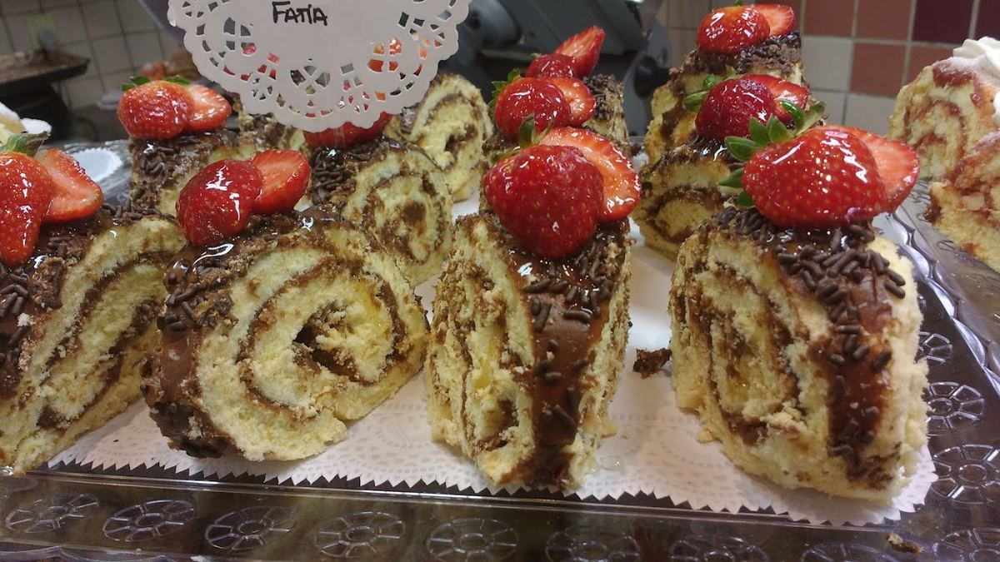
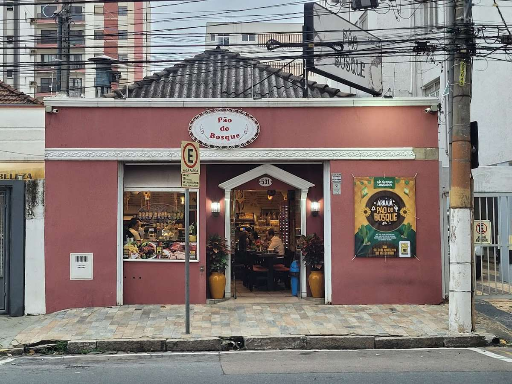
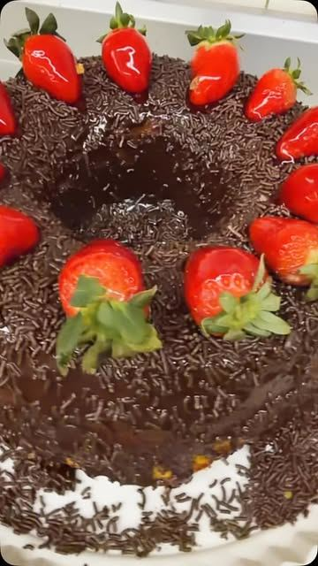
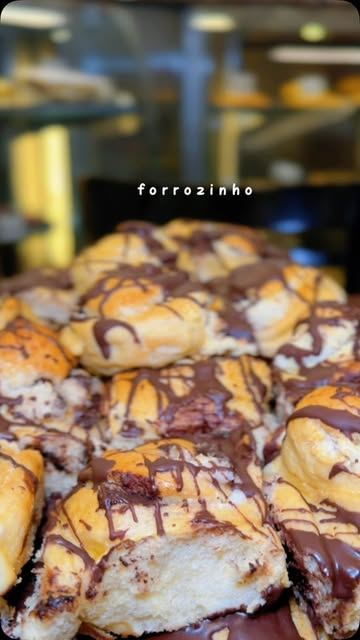
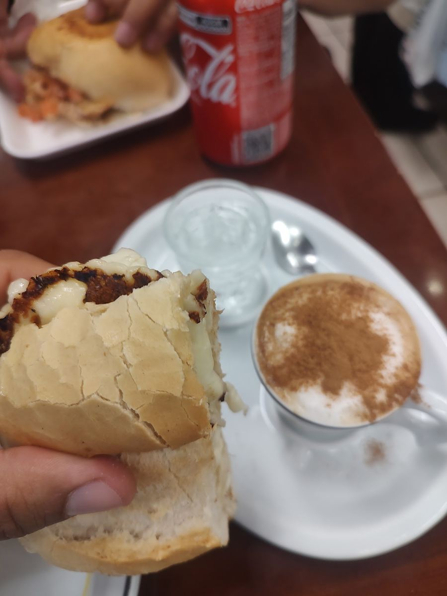
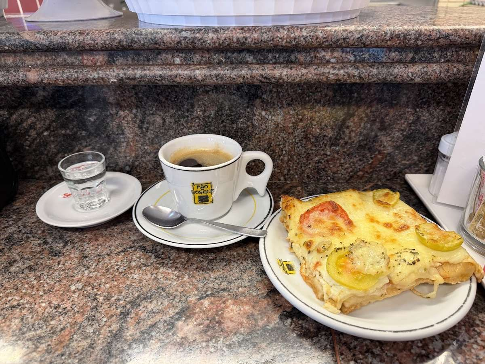
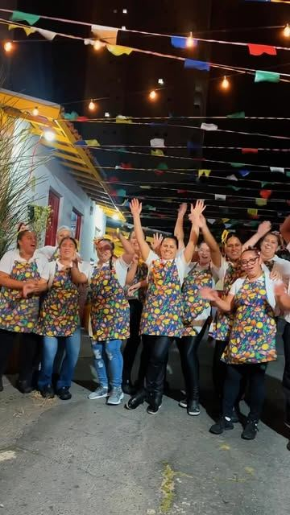

Doces da vitrine
Rocambole, tortas e o que sair do forno no dia.
Pão quentinho desde as 6h30, café passado, pão de queijo, lanche de pernil e almoço caseiro, com feijoada na sexta. Tem estacionamento grátis na frente e atendimento que chama o cliente pelo nome.
Seg a sáb 6h30 às 20h · dom 7h às 13h

E na sexta-feira tem feijoada, com aquele sabor caprichado para começar o fim de semana.
Doces, salgados, pães, tortas, bolos, cafés e comida, como resumem os clientes no Google.

Rocambole, tortas e o que sair do forno no dia.

Inteiros ou na fatia, para levar.

E broas, quando é época.

O lanche de pernil é um dos mais citados.

Tem cliente de hotel da região que diz que não compensa tomar café no hotel tendo a Pão do Bosque ali pertinho. A partir das 6h30 já tem pão quente, café e a vitrine cheia.

Padaria no estilo acolhedor. Cardápio completo e variado, com ótima opção de doces e pães. Excelente atendimento.Lucca · Google
Local pequeno, acolhedor e com ares de cidade do interior. Comida muito bem feitinha e preços justos.Edson · Google
Ambiente muito aconchegante. Todos os funcionários simpáticos e, principalmente, o café é muito bom.Rafael · Google
| Segunda | 6h30 às 20h |
| Terça | 6h30 às 20h |
| Quarta | 6h30 às 20h |
| Quinta | 6h30 às 20h |
| Sexta | 6h30 às 20h |
| Sábado | 6h30 às 20h |
| Domingo | 7h às 13h |
R. Uruguaiana, 531 · Bosque, Campinas (SP)
Telefone (19) 3234-1150 · WhatsApp (19) 99867-8130
Estacionamento grátis em frente · entrada e banheiro acessíveis · aceita cartão, aproximação e Pluxee